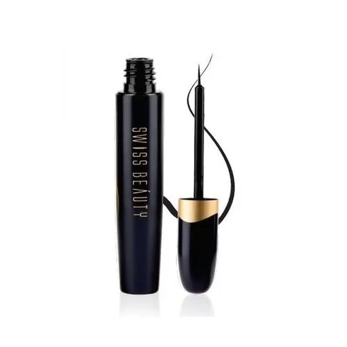
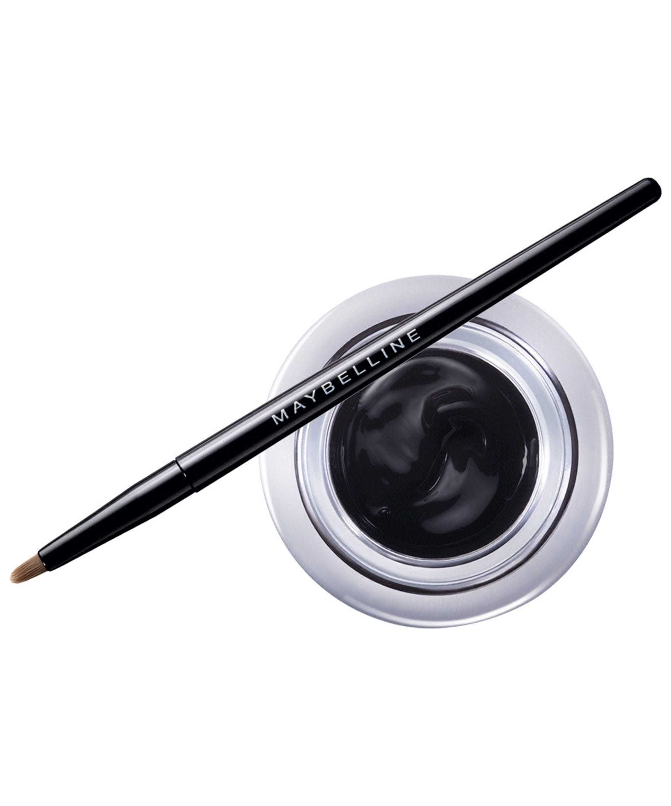

Eyeliner
It comes in various forms, including pencil, liquid, gel, and pen, allowing for different application techniques and effects. Eyeliner can be used to create a subtle, natural look or a bold, dramatic look, depending on the style and preference. Common types include pencil liners for easy application, liquid liners for precise lines, and gel liners for long-lasting wear.

Liquid eyeliner offers precise application and intense pigmentation for sharp, defined lines. Its long-lasting formula is ideal for creating dramatic winged looks or intricate designs.

Gel eyeliner provides a smooth and creamy texture, allowing for easy application with a brush or pencil. It offers versatility, as it can be smudged for a softer effect or built up for bold, graphic lines.